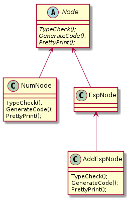
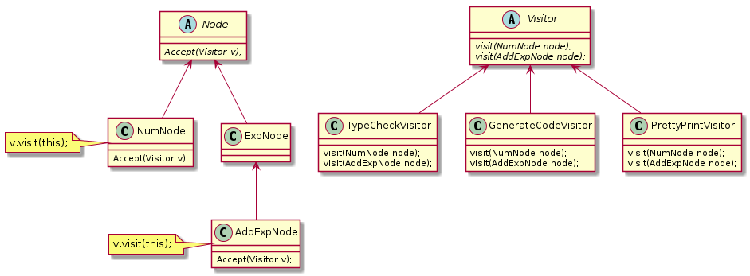

Visitor
Table of Contents
1 Visitor pattern
Represent an operation to be performed on the elements of an object structure. Visitor lets you define a new operation without changing theclasses of the elements on which it operates.
1.1 The problem and the naive solution
We have a list of classes in a class hierarchy, e.g. AST nodes. We want to define many operations, each operates different on different nodes.

This is not good. Application code is mixed with the AST node implementation.
1.2 The pattern
We define a hierarchy of visitors, and defines different behavior inside the visitors for different nodes they operate on. This is called double-dispatch: The virtual functions lookup is decided not only by the object the function is defined on, but also the arguments it accepts.

1.3 Example
public interface AST { public static abstract class ASTNode { public abstract Object accept(Visitor visitor); } public static abstract class Exp extends ASTNode { } public static class NumExp extends Exp { double _val; public Object accept(Visitor visitor) { return visitor.visit(this); } } public static class AddExp extends CompoundArithExp { public AddExp(List<Exp> args) { super(args); } public Object accept(Visitor visitor) { return visitor.visit(this); } } }
public class Evaluator implements Visitor<Value> { public Value visit(NumExp e) { return new NumVal(e.v()); } public Value visit(AddExp e) { List<Exp> operands = e.all(); double result = 0; for (Exp exp : operands) { NumVal intermediate = (NumVal) exp.accept(this); // Dynamic // type-checking result += intermediate.v(); // Semantics of AddExp in terms of the // target language. } return new NumVal(result); } }